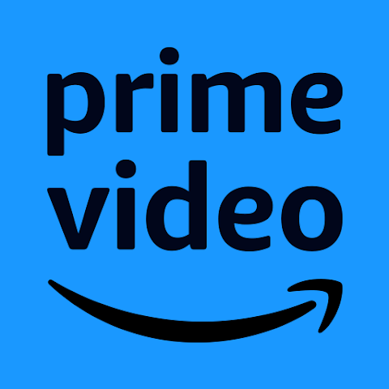
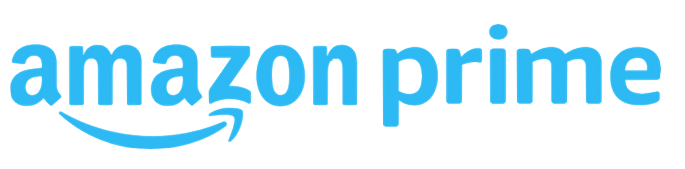

아마존 Amazon
아마존은 쇼핑몰보다 고객의 기다림과 탐색 비용을 줄이는 시스템 브랜드에 가깝다. 상품 범위, 검색, 추천, 배송, 결제 경험이 하나로 연결되면서 브랜드의 가치는 편리함과 예측 가능성으로 축적된다. Kantar BrandZ 2026 Top 100에서 Amazon는 4위, 브랜드 가치는 US$1,022,820M, 전년 대비 변화율은 18%로 공표되었습니다.
최종 업데이트
아마존은 어떤 브랜드인가
아마존은 쇼핑몰보다 고객의 기다림과 탐색 비용을 줄이는 시스템 브랜드에 가깝다. 상품 범위, 검색, 추천, 배송, 결제 경험이 하나로 연결되면서 브랜드의 가치는 편리함과 예측 가능성으로 축적된다.
Kantar BrandZ 2026 Top 100에서 Amazon는 4위, 브랜드 가치는 US$1,022,820M, 전년 대비 변화율은 18%로 공표되었습니다.
아마존은 어떻게 봐야 할까
아마존은 쇼핑몰보다 고객의 기다림과 탐색 비용을 줄이는 시스템 브랜드에 가깝다. 상품 범위, 검색, 추천, 배송, 결제 경험이 하나로 연결되면서 브랜드의 가치는 편리함과 예측 가능성으로 축적된다.
아마존은 어떻게 시작되고 성장했나
제프 베조스가 1994년 시애틀에 설립한 미국의 전자상거래를 기반으로 한 IT 기업. 도서를 비롯하여 다양한 상품은 물론 전자책, 태블릿 PC를 제조 판매하며, 기업형 클라우드 서비스도 제공하고 있다.
아마존의 브랜드 아이덴티티는 무엇인가
아마존의 워드마크는 1994년 창업 초기의 강물 형상 로고를 거쳐 2000년 디자인 스튜디오 터너 더크워스가 만든 현재 형태로 정착했다. 소문자 amazon 글자 아래에 a에서 z로 휘어 올라가는 곡선 화살표가 핵심 요소다.
이 화살표는 알파벳 a부터 z까지 모든 상품을 판매한다는 포괄성을 나타내는 동시에, 양 끝이 위로 들린 형태가 사람이 웃는 입 모양을 닮아 고객 만족과 친근함을 함께 상징한다. 색상은 따뜻한 톤의 아마존 오렌지를 화살표에 쓰고 글자는 검정으로 처리해 단순하고 명료한 대비를 이룬다.
워드마크 전체를 소문자로 표기한 점은 권위적이기보다 접근하기 쉬운 인상을 주며, 이 기본 골격은 이후 수정을 거치면서도 a-z 스마일 화살표와 오렌지·블랙 조합이라는 정체성을 일관되게 유지하고 있다.
아마존의 대표 제품과 서비스는 무엇인가
아마존 에코, 아마존 프라임, 아마존 비디오, ComiXology, 아마존 웹 서비스, 알렉사 인터넷, 아마존 앱스토어, 아마존 킨들
아마존 연혁 — 주요 사건은 언제였나
아마존 로고는 어떻게 변해왔나

BI/CI 아카이브 2보관 이미지 2
BI/CI 아카이브 3보관 이미지 3자주 묻는 질문
아마존는 어떤 산업의 브랜드인가요?
아마존는 리테일·커머스 분야의 브랜드입니다.
아마존의 브랜드 아이덴티티는 무엇인가요?
아마존의 워드마크는 1994년 창업 초기의 강물 형상 로고를 거쳐 2000년 디자인 스튜디오 터너 더크워스가 만든 현재 형태로 정착했다.
아마존의 대표 제품은 무엇인가요?
아마존 에코, 아마존 프라임, 아마존 비디오, ComiXology, 아마존 웹 서비스, 알렉사 인터넷, 아마존 앱스토어, 아마존 킨들
아마존는 어느 기업이 소유하고 있나요?
공식 웹사이트: https://www.amazon.co.jp/; 국가: 미국; 본사: 시애틀; 소유자: 제프 베이조스; 산업: 소매
출처와 검증
브랜드명은 한글과 원어를 함께 표기하되 데이터에 없는 표기는 만들지 않습니다. 기원 국가·설립연도는 검수된 정의문에서 확인된 값을 우선하고, 없을 때만 공식 웹사이트 URL이 일치하는 위키데이터 개체의 값을 씁니다.